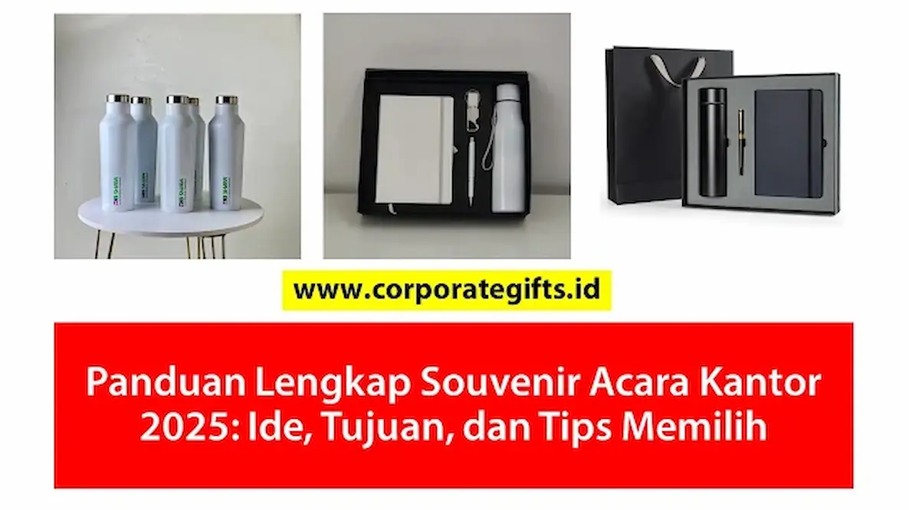

Corporate Gifts ID - Memilih souvenir acara kantor yang tepat sering kali menjadi tantangan tersendiri bagi tim procurement dan event committee perusahaan. Cinderamata acara bukan sekadar seremonial pembagian barang, melainkan sarana efektif untuk membangun apresiasi, mempererat relasi bisnis, dan meningkatkan brand awareness secara berkelanjutan.
Apakah instansi Anda sedang merencanakan rapat kerja tahunan (raker), gathering karyawan, onboarding anggota tim baru, atau seremonial apresiasi klien penting di tahun 2026? Panduan komprehensif ini merangkum klasifikasi jenis souvenir populer, tujuan strategis pengadaan, inspirasi ide kreatif lintas anggaran, hingga checklist memilih vendor pengadaan terpercaya.
1. Jenis & Contoh Souvenir Kantor Populer
Memahami klasifikasi produk cinderamata akan mempermudah Anda menentukan pilihan yang selaras dengan tema acara. Berikut adalah 6 kategori souvenir kantor yang paling banyak diminati korporasi modern:
- Alat Tulis Kantor (Stationery): Pilihan klasik yang tetap esensial di lingkungan kerja. Contohnya mencakup pulpen metal eksklusif grafir nama, buku agenda custom berbahan kulit sintetis (PU leather), sticky notes memo set, mouse pad ergonomis, serta desk organizer meja multifungsi.
- Pakaian & Aksesori (Custom Apparel): Sangat efektif membangun kohesivitas dan kebanggaan tim saat gathering, outing, maupun pameran dagang. Contohnya berupa kaos polo katun pique bordir logo, tote bag kanvas tebal, jaket bomber, topi baseball, dan lanyard printing berkualitas.
- Peralatan Minum (Drinkware): Produk fungsional yang digunakan setiap hari, memastikan eksposur logo Anda terlihat konstan di meja kerja. Contohnya meliputi tumbler vacuum insulated SUS 304 tahan panas dingin hingga 12 jam, mug keramik coating glossy, serta botol minum infuser.
- Gadget & Aksesori Elektronik: Pilihan modern yang disukai generasi profesional muda di era kerja digital. Contohnya mencakup flashdisk kartu custom OTG, powerbank fast charging 10.000 mAh, speaker bluetooth mini portabel, dan wireless charger stand.
- Souvenir Ramah Lingkungan (Eco-Friendly Kit): Menunjukkan komitmen nyata perusahaan terhadap prinsip keberlanjutan (Environmental, Social, and Governance / ESG). Contohnya berupa cutlery set bambu dalam pouch kanvas, tas belanja lipat daur ulang (spunbond/kanvas organik), dan notebook kertas daur ulang kraft.
- Kesehatan & Kesejahteraan (Wellness Kit): Semakin relevan pasca-pandemi untuk mendukung kesejahteraan tim kerja. Contohnya adalah hand sanitizer holder kulit, essential oil diffuser aromaterapi, dan mini massage ball.
Poin Kunci Dampak Strategis Souvenir Acara Kantor:
- Investasi Hubungan: Souvenir berkualitas merupakan bentuk apresiasi nyata yang memicu resiprositas psikologis dan loyalitas kemitraan jangka panjang.
- Media Promosi Berjalan: Produk bernilai guna tinggi seperti tumbler dan tas laptop memberikan eksposur brand harian tanpa biaya iklan berkelanjutan.
- Standar Citra Korporat: Mutu material dan kerapian kustomisasi logo mencerminkan standar profesionalisme perusahaan Anda di mata stakeholder.
2. Mengapa Souvenir Penting? Konsep & Tujuan Pemberiannya
Pemberian souvenir bukan sekadar pos pengeluaran biaya operasional, melainkan investasi strategis dalam membangun aset tak berwujud berupa reputasi dan hubungan kemitraan yang solid.
Perbedaan Merchandise vs Souvenir Perusahaan
Secara konsep pengadaan:
- Merchandise Perusahaan: Cenderung bersifat promosi massal atau produk komersial yang didistribusikan luas untuk membangun jangkauan merek (brand reach) umum.
- Souvenir Perusahaan: Diberikan secara terkurasi sebagai kenang-kenangan eksklusif pada momen tertentu (rapat kerja, perayaan anniversary, penandatanganan MoU, atau gathering) dengan fokus pada penguatan ikatan emosional dan apresiasi personal.
Tujuan Strategis Memberikan Souvenir kepada Karyawan dan Klien
- Apresiasi & Peningkatan Motivasi: Menyerahkan cinderamata fungsional kepada tim kerja pasca-acara internal merupakan pesan nyata bahwa kontribusi mereka sangat dihargai oleh manajemen.
- Branding Jangka Panjang Berkelanjutan: Barang yang digunakan berulang kali di ruang publik atau meja kantor bertindak sebagai etalase promosi pasif yang bekerja setiap hari.
- Memperkuat Hubungan Kemitraan B2B: Hadiah berkelas yang disesuaikan dengan profil klien VIP meninggalkan impresi positif mendalam dan memperlancar kerja sama bisnis di masa depan.
- Membangun Identitas & Budaya Perusahaan: Atribut seragam saat acara onboarding atau gathering menumbuhkan rasa bangga serta kepemilikan (sense of belonging) terhadap visi perusahaan.

Kurasi paket gift set terpadu kombinasi botol minum termos custom, buku catatan agenda kerja, dan kemasan boks elegan berlogo.
Matriks Rekomendasi Souvenir Berdasarkan Jenis Acara Kantor
Untuk menyederhanakan perencanaan RAB pengadaan, berikut adalah tabel klasifikasi jenis souvenir berdasarkan format acara kantor, perkiraan budget, dan item produk terbaiknya:
| Format Acara Kantor | Target Audiens | Rekomendasi Paket Souvenir | Rentang Estimasi Biaya |
|---|---|---|---|
| Rapat Kerja / Raker | Manajemen, Tim Internal & Divisi | Executive Notebook Set, Pulpen Metal Grafir, Flashdisk Kartu | Rp75.000 - Rp175.000 / paket |
| Company Gathering / Outing | Seluruh Karyawan & Keluarga | Polo Shirt Katun Pique, Tumbler Stainless SUS 304, Tote Bag | Rp90.000 - Rp200.000 / paket |
| Onboarding Karyawan Baru | Talenta Baru / Fresh Graduate | Welcome Kit (Lanyard Printing, Card Holder Kulit, Mug Keramik) | Rp65.000 - Rp150.000 / paket |
| MoU / Pertemuan Klien VIP | Direksi, Investor & Klien Korporat | Exclusive Gift Set (Pen Parker/Montblanc, Plakat Kristal 3D, Hardbox) | Rp250.000 - Rp750.000+ / paket |
3. 50+ Ide & Inspirasi Souvenir Kantor Kreatif Sesuai Budget 2026
Berikut adalah inspirasi kurasi ide cinderamata yang dapat disesuaikan dengan skala prioritas anggaran perusahaan Anda:
Ide Souvenir untuk Acara Rapat Kerja & Konferensi
Berfokus pada fungsionalitas penunjang produktivitas dan kelancaran alur rapat:
- Set buku agenda cover kulit sintetis dengan saku penyimpanan kartu nama.
- Pulpen rollerball logam berukir logo laser presisi.
- Flashdisk kartu custom kapasitas 32GB/64GB berisi dokumen materi rapat digital.
- Botol minum termos berinsulasi suhu untuk menjaga fokus peserta selama diskusi panjang.
Souvenir Kantor Kekinian Ekonomis (Di Bawah Rp50.000)
Anggaran efisien tetap mampu menghasilkan cinderamata bernilai tinggi dengan sentuhan desain kreatif:
- Gantungan kunci akrilik atau logam enamel berdesain maskot perusahaan.
- Pouch kanvas serbaguna untuk organizer kabel charger dan earphone.
- Mini desk fan USB atau portable pocket humidifier untuk meja kerja ber-AC.
- Tanaman hias sukulen mini dalam pot keramik cetak logo.
- Mug keramik sablon satu warna berdesain kutipan motivasi kerja.
Souvenir Premium untuk Klien & Tamu Penting (VIP)
Mengedepankan kemewahan material dan finishing eksklusif untuk mempertegas citra prestisius:
- Paket hampers kopi artisan nusantara, teh single origin, dan madu organik dalam boks kayu pinus.
- Powerbank nirkabel (wireless charging pad) berkapasitas 10.000 mAh bersertifikasi keamanan.
- Agenda kerja kulit asli dengan grafir inisial nama personal penerima.
- Payung lipat otomatis 8 jari dengan rangka anti-angin dan lapisan anti-UV tebal.
- Aroma reed diffuser beraroma relaksasi dengan stik rotan impor.
4. Panduan Praktis: Cara Memilih Souvenir & Vendor Terbaik
Agar proses pengadaan berjalan lancar tanpa kendala operasional, terapkan 4 langkah taktis berikut ini:
- Tentukan Tujuan Strategis & Plafon Anggaran: Tetapkan sejak awal apakah fokus cinderamata untuk apresiasi internal, branding massal eksternal, atau relasi VIP, lalu tentukan pagu biaya per unit.
- Kenali Karakteristik Audiens Penerima: Sesuaikan pilihan barang dengan demografi penerima. Generasi milenial menyukai tech gadget dan apparel kasual, sedangkan eksekutif C-level mengutamakan estetika formal dan kemasan hardbox mewah.
- Prioritaskan Fungsionalitas & Mutu Material: Jangan tergiur harga murah yang mengorbankan kualitas. Produk yang cepat rusak justru berdampak kontraproduktif terhadap reputasi brand.
- Validasi Mockup Visual & Sampel Fisik: Mintalah preview mockup 2D/3D dari vendor sebelum proses cetak massal guna menghindari kesalahan tata letak atau perbedaan warna logo.
Checklist Memilih Vendor Souvenir B2B Terpercaya
- Periksa Portofolio & Klien Terdahulu: Vendor terpercaya memiliki rekam jejak menangani pengadaan korporasi swasta, BUMN, maupun lembaga pemerintahan.
- Kelengkapan Legalitas & Faktur Pajak: Pastikan penyedia berbadan usaha resmi dengan NPWP dan kemampuan menerbitkan faktur pajak untuk kelancaran LPJ pengadaan.
- Komunikasi & Responsifitas Layanan: Pilih vendor yang proaktif memberi solusi teknis dan sigap memberikan alternatif produk saat ada kendala ketersediaan stok.
- Jaminan Garansi & Quality Control: Pastikan adanya garansi penggantian jika ditemukan barang cacat produksi atau kerusakan selama proses pengiriman.
Kesimpulan
Souvenir acara kantor yang dipersiapkan dengan cermat merupakan jembatan komunikasi yang sangat efektif untuk memperkuat loyalitas stakeholder dan memancarkan reputasi profesionalisme perusahaan Anda. Dengan memadukan fungsionalitas produk, desain kustomisasi presisi, dan pemilihan vendor terpercaya, setiap cinderamata yang diserahkan akan menjadi kenangan berharga yang tak lekang oleh waktu.
Siap merancang souvenir acara kantor terbaik bagi perusahaan Anda di tahun 2026? Hubungi tim konsultan CorporateGifts.ID untuk mendapatkan konsultasi katalog lengkap, mockup visual digital gratis, dan penawaran harga B2B terbaik hari ini.